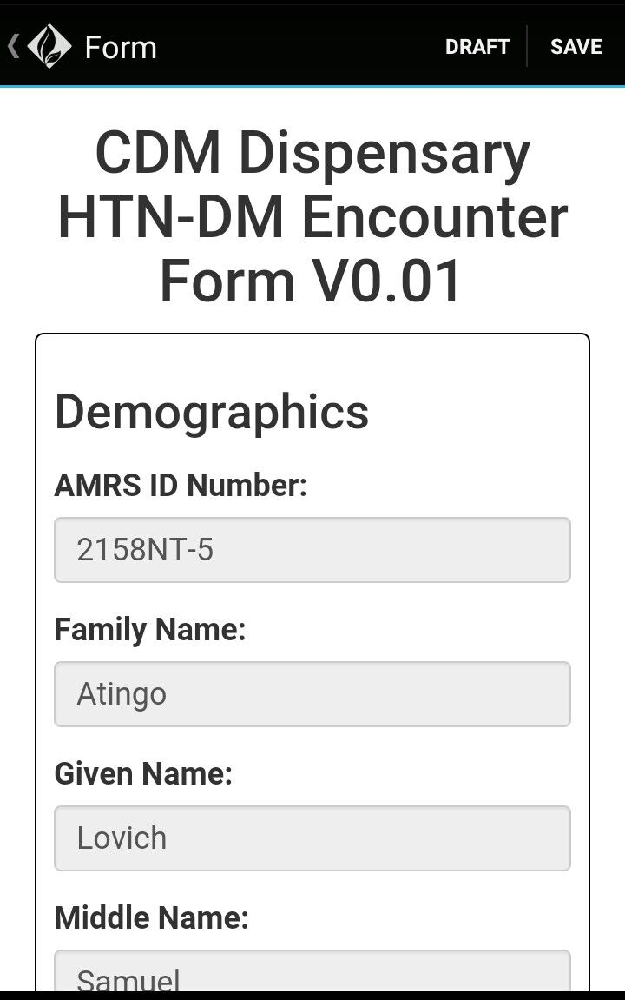

Filling Forms For A Patient
Before filling in a form for a client, make sure you have downloaded the correct form. If not, go to the main mUzima
dashboard and click on forms, click on 'All Form Templates' tab which will list all the forms, choose the correct
form and click on the download button.
After successfully downloading the form, go to the main mUzima dashboard and click on Clients.
Follow the steps below:-
- Select and click the appropriate client.
- On the Forms section, you should be able to at least see one or more Recommended forms.
- Click on the appropriate form i.e the form you downloaded to the phone.
- The form will load with the demographic details of the client.
- Fill in the form for the client.
Note: Any fields marked with a red '*' are mandatory and MUST be filled
Forms can be saved as draft or as complete.
Each of the above functionality has a button at the bottom of the form
Example. Dispensary form
